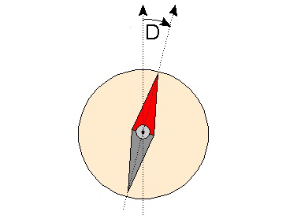

2. Teori Kemagnetan Bumi
Bumi dapat dianggap sebagai magnet yang sangat besar. Bumi memiliki kutub-kutub magnet yaitu kutub utara dan kutub selatan. Apakah kamu mengetahui bahwa jarum pada kompas terbuat dari magnet yang dapat menunjukan arah kutub utara dan selatan bumi. Perlu kamu ketahui bahwa jarum kompas yang menunjukan arah utara sebenarnya mengarah ke kutub selatan bumi. Itu dikarenakan sifat magnet yang saling Tarik menarik ketika kutubnya berlawanan.
Penunjukan arah jarum kompas tidak tepat menuju kutub-kutub bumi ada simpangan yang terjadi yang membentuk sudut deklinasi dan inklinasi. Seperti yang terlihat pada gambar berikut.

Sudut deklinasi
Penunjukan arah jarum kompas tidak tepat menuju kutub-kutub bumi ada simpangan yang terjadi yang membentuk sudut deklinasi dan inklinasi. Seperti yang terlihat pada gambar berikut.
Sudut deklinasi yaitu sudut yang dibentuk oleh jarum kompas dengan simpangan arah utara dan selatan bumi. Sudut deklinasi dapat bernilai positif maupun negatif tergantung pada arah penyimpangannya. Sudut deklinasi bernilai positif saat jarum utara kompas menyimpang ke arah timur. Sedangkan sudut deklinasi bernilai negatif saat jarum utara kompas menyimpang ke arah barat.

Mari Mencoba
Petunjuk :
- Latihan berjumlah 2 soal yang terdiri dari gambar dan dua pilihan jawaban.
- Soal berikutnya akan muncul setelah menjawab soal dengan benar.
- Pada saat jawaban dipilih, hasil benar atau salah akan langsung terlihat.
Gambar berikut merupakan gambar yang menunjukan sudut ....
|
|


Kesimpulan